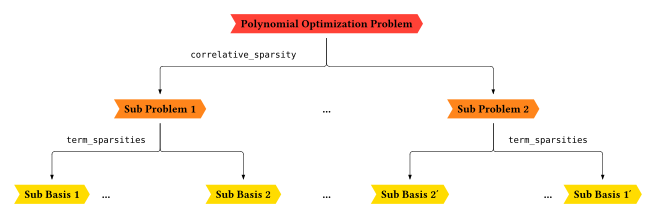
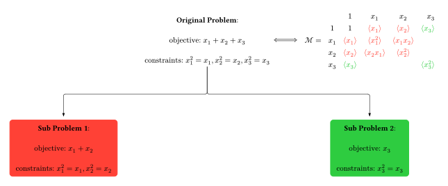
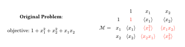

Sparsities
The main goal is to reduce the number of monomials used in indexing the moment matrix. This is a crucial step in making the semidefinite programs more efficient, as the size of the moment matrix directly affects the computational cost of solving the problem. By exploiting the structure of the problem, we can often significantly reduce the number of monomials needed, leading to substantial performance improvements.

Correlative Sparsity
Correlative sparsity, also known as chordal sparsity, arises from the underlying structure of the problem's variables. In many physical systems, not all variables are directly coupled. This lack of coupling can be represented by a graph, where the vertices are the variables and the edges represent direct interactions. The correlative sparsity pattern is then determined by the maximal cliques of this graph. A clique is a subset of vertices where every two distinct vertices are adjacent. By only considering monomials within these maximal cliques, we can significantly reduce the size of the moment matrix. This is because the moment matrix will be block-diagonal, with each block corresponding to a maximal clique.

Term Sparsity
Term sparsity, also known as ideal sparsity, is a more direct way of exploiting the structure of the polynomials involved in the problem. If a certain monomial does not appear in any of the polynomial constraints, then it can be safely removed from the basis of the moment matrix. This is because the corresponding entry in the moment matrix will not be constrained by the problem, and thus can be set to zero without affecting the solution. This type of sparsity is particularly effective when the polynomials are sparse, i.e., they have only a few non-zero terms.
